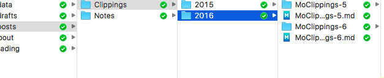

Hexo - 使文章依文章分類為資料夾名稱置放
一、前言
轉戰 Hexo 並且開始剛開始以 Hexo 做完技術或資訊相關知識分享的部落格平台，已經有一兩個禮拜了，隨著文章數目越來越多，開始發現，hexo 在原始的方法中，文章一多之後，將很難管理 post 這個資料夾的文章原始檔案。翻了一遍官方教學提到的方法，也僅提到可以將 _config.yml 中的 new_post_name 新文章檔案名稱的參數，修改為以檔案產生日期為檔名，來作為檔案管理方便尋找。但這方法在文章非常多的時候，還是會造成不容易尋找。為了找解決方案，因此出現了這篇筆記。
二、最終結果
在透過相關設定後，文章的網址將設定為像以下的結構：
(一) hexo 文章網址的結構如下
|
|
說明：
domain name: 你的網域名稱
folder name: 設定的資料夾名稱
title name: 文章的標題名稱
(二) hexo source/_post 資料夾底下的結構如下

以本站的文章為例，我的 Clippings 剪報類文章，結構上在 _post 底下有兩層資料夾，除了第一層 Clippings 為資料夾名稱外，還再加上以 2016 也就是依年度再做一次資料夾分類。而其他筆記類的，當然也就可以依據筆記類型、文章屬性等做資料夾分層分類，如此在找文章原始檔的時候，便可以較輕易的找到所需要的內容。
三、Hexo 設定
(一) hexo _config.yml 設定檔設定
找到 _config.yml 檔做編輯，將 URL 的部分一下做設定：
|
|
可以看到，關於 permalink 永久連結的部分，只設定了 :title/ ，這部分有兩個說明：
- 在 hexo 的環境中，目前實驗出來的結果知道，hexo在產生文章網址的時候，會以
_post資料夾起，直到你的文章原始檔的路徑，視為title文章名稱，同樣以我的 Clippings 剪報類文章 為例子，我把創刊號放在_post下的路徑「Clippings/2015/MoClippings-1.md」，因此hexo會認為該篇文章的文章名稱為 「Clippings/2015/MoClippings-1」。 - 在
permalink我在:title的後面加了/符號，這部分是因為我設定了post_asset_folder = true，意思是產生文章的時候，順便產生與文章同名的資料夾。目的是為了管理資源，使同一篇文章的圖片或檔案，都收錄在同一資料夾中。因此，如果沒有加上/符號，在做 hexo 文章產出hexo generate的時候，會發生 hexo 有錯誤，顯示某些檔案不存在或不為資料夾。
(二) hexo _post 下資料夾設定
在 _post 資料夾下，基本上也僅需要定義好各個資料夾名稱，把相對應的文章做妥善的資料夾分類即可。
同樣在以我的 Clippings 剪報類文章 為例子，因為我的剪輯一個月可能就兩三篇了，一年會有三四十篇同質的文章，因此我把它設計為文章分類下，再建立年份資料夾，這樣未來就不會產生太多文章而找不到自己想找的內容。
當然，如果是其他類型的文章，也可以做不一樣的分類，這部分自由度就相當高了。
(三) Hexo 版本
這篇文章目前在 Hexo 3.2.0 的環境驗證測試正常。如為其他版本，需要再額外驗證。
四、結論
就 Hexo 來說，我們是以自定義的文章分類名稱作為資料夾名稱，這與
Hexo的Front-matter裡頭設定的文章分類categories是不一樣的，本來還曾經測試過設定permalink為:category/:title/，但執行hexo generate之後，產生的連結會是文章內Front-matter設定的分類資料夾再加上_post後各個資料夾的名稱加title為連結名稱，這重複了，因此驗證 hexo 並不會看到資料夾名稱與Front-matter設定的文章類別一致，就不再產生資料夾。所以才出現這篇文章的解法。如大家習慣以
hexo new draft作草稿編輯，那在進行hexo publish {title}後，hexo 僅會將原本在_draft的文章搬到_post在搬妥之後還需要自行建立對應的資料夾並搬過去的動作，這部分比較麻煩一些。
希望這篇文章可以幫助到一些人。
P.S. 在快寫文這篇文章之後才發現，點燈坊也有一篇類似的文章如何使Hexo以文章分類為URI?